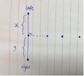
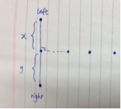
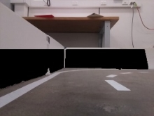

Mini self-driving - turtlebot
Contents
Mini self-driving - turtlebot¶
COMP3431
Project Report
Autonomous driving using TurtleBot in a simulated road environment
November 2020
Team name: Boston Static
School of Computer Science and Engineering, The University of New South Wales, Sydney NSW 2052, Australia
This is an individual project report for the assessment in COMP3431 by Jerry
Abstract¶
This project examines the application of autonomous driving on TurtleBot (Waffle Pi). The goal is to achieve lane following of a road map, path planning and object detection such as intersection, robots, pedestrian, traffic sign and traffic light. The methods used include Hough transformation in lane detection and breadth-first search in path planning. Besides, blob detection, morphological transformations and other image processing techniques from OpenCV are implemented for object identification.
1. Introduction¶
The TurtleBot is used in the ROS Autorace competition to achieve autonomous driving under various road condition without any external interference.
This project primarily focuses on five tasks described as following:
Stop when a stop sign detected at the intersection.
Obey traffic light which is demonstrated by coloured poles
Slow down or stop when other TurtleBot detected
Determine whether to give way to other TurtleBot at the intersection
Create a map and make a path planning given a destination
The version of TurtleBot used is Waffle Pi which includes a Raspberry Pi 3, camera, and other sensor devices such as LiDAR, and the development platform involved are ROS Melodic and Ubuntu 18.04.
Based on the demonstration in the lab, the implementation reasonably achieves all five above tasks. However, there are some issues observed during the demonstration. Firstly, the inconsistent network connection leads to a delay in the communication between the remote machine and the TurtleBot. Thus, the processing speed of the camera image and the connection to the robot from Rviz1 are slow. Therefore, the maximum linear velocity of the robot is set to 6 cm per second and angular speed is reduced as well. Besides, the localisation using AMCL2 is observed to be inaccurate after a period. As a result of multiple nodes subscribing to the camera topic, the queue size seems to be filled up at the end of the demonstration, which causes a loss of control on the robot. Moreover, some edge cases such as the stop sign or lane are hidden by other TurtleBot and U-turn at the corner are not demonstrated.
My contribution to the project focuses on processing images using different morphological transformation and thresholds such as HSV, contours and area to identify the coloured poles, stop sign, TurtleBot and intersection. Related function APIs are also created to the corresponding movement code. Besides, a route planning with BFS, a map with the road shown by shifting the path recorded, a node uses laser scan ranges and intensities to identify obstacles (not used), a node makes U-turn and code that finds turning points of the path are implemented. Some minor suggestion is made on the lane following such as reducing the velocity of the robot to compensate the delay in receiving camera image.
The method used in this project includes blob detection, finding contours and applying HSV masks to image for identifying different colours and shapes. Breath first search used in weightless directed path graph for route planning, and Ramer-Douglas-Peucker algorithm (RDP) for getting the turning points of the path graph.
The following section introduces the details of the theory and implementation on path planning, object identification and lane following.
3. Theory¶
3.1 Object identification.¶


Figure 1 - poles and stop sign detection
Yellow, green, blue colour on the poles are detected using HSV, which is decided with high precision using the trackbar function from OpenCV (see Figure 1). The trackbar function allows manually drag the trackbar for setting the lowest and highest range of HSV to give the best possible mask for the binary image. Thresholds such as area, number of contours and the slope of the line are set to avoid noisy data such as blue shirt, dashed line and light reflection from the ground, which conflicts with the detection on coloured poles and intersection. Stop sign is detected by using blob detection on the red colour, where TurtleBot is on black.
Text detection for stop sign (not used) involves downsampling the image, filtering it with morphological gradient, binarizing, and then connecting horizontally oriented regions with closing. After that, contours with a 45 % ratio of non-zero pixels in the filled region and a ratio of 1.1 between width and height are chosen to minimise the noisy data. For example, the red door behind the stop sign and stop sign locating on the side of the road can confuse the robot. (see Figure 1). Besides, the T intersection is detected by finding a rectangle line in the middle area of the camera frame with other area being cropped and masked (see Appendix A).
Facial recognition for the pedestrian is achieved via Haar cascades machine learning approach where pre-trained classifier for different parts of the face is obtained from online (Menon, 2019).

3.2 Path Planning¶

Figure 2 - pseudo-code for determining U-turn and if in the right lane, second image contains code decides which turning direction at the intersection
Figure 3 – original points recorded, path with turning point, connect intersection


Breadth-First Search is used for making a route given a destination and there are two main steps in path planning.
Firstly, depends on the shortest path found from the robot position to the destination (global map frame), TurtleBot needs to decide whether to make a U-turn or continue moving forward.
Secondly, the existence of intersection in the shortest path is checked which determines the direction of turning at the intersection.
For the first step, Breadth-First Search is used to find the shortest path from the TurtleBot to the destination. To ensure the TurtleBot follows the lane during the path following, points from Odom topic are recorded into a file and the records stop when all left lane is visited exactly once (no backward trip on the same road). In this way, the graph built based on the points (using the python dictionary) contains less noise and needs less manipulation. For example, if the right lane is also recorded, then extra work is needed to connect the graph between the left and right lane.
After the points are recorded, it is first to be read as a python list and then translated into a directed graph based on the recording order, where the middle point connect to its previous and next point. The intersection points (three in total for T intersection) are manually connected in the graph (see the black points in Figure 3). Any point within the connection between these three intersection points is deleted, which ensures that the intersection points are connected without noise.
Before determining if Turtlebot needs to make a U-turn or forward, it is checked whether it is on the left lane. To achieve this, points are recorded every 5cm and it is known that the distance between the centre of the left and right lane is more than 20cm. So, it is guaranteed that when turtlebot is on the same lane (left lane) where points are recorded, the distance between its current position and its closest point in the path is always less than 5cm, otherwise, the robot is on the opposite road (right lane).
Then, the order of the first and second point in the path appears in the initial points recording is compared. For example, if the first comes earlier than the second, then the path is in front of the TurtleBot. Otherwise, behind, An edge case is when the first point is the middle intersection point, then it is checked if the next point is also an intersection point, if so, then the path is in front, otherwise, behind.
Now, given direction of the path and the position on the lane is known, it can then be calculated that, for example, if a path is in front and not on opposite road, then the TurtleBot should move forward.
There is an unused idea of a simple transformation between the point recorded and the actual starting point is used. It first calculates the offset between the actual first point from Odom topic and the first one recorded. Then, this offset is added to all points recorded for path calculation purpose. When path publishes to the Rviz, the offset is then removed to match the recorded map frame.
For the second step, as mentioned above, all three intersection points are connected without any other points in between. Then the turning direction at the intersection is determined by comparing the intersection point that comes early in the path and the one that is the next. For instance, if the left intersection point comes before the middle intersection point, then the robot turns right.
Once the turtlebot decides its direction, these instructions are then published to the corresponding topic relative to the turning movement code.
As seen the Figure 3, RDP helps find different segments of line and thus turning point (Marquez & Wu, 2003), which originally is planned to be used for changing the motion of robot at the corner.
3.3 Map¶
Figure 4 - creating road on the map


 

As seen in Figure 4, the white line in image 1 represents the path TurtleBot took and the black lines are the left and right lane. The two black lines are created by shifting the white line to left around 10 cm and to right 60 cm. The white dashed line shown in the second image shifts the path recorded to right by 20 cm and is published with different marker ID, a gap of 4 points and each dashed line corresponds to a length of 8 points (around 40 cm).
The method used is illustrated in the third diagram. The horizontal points are the path recorded and the point on the top and bottom are the left and right lane point relative to the path line.
Firstly, the recorded points list is looped through, with each time two points read which creates a linear line formula for the dashed line seen from the image. Then, a perpendicular line passed through the first of the two points is calculated. After that, the up and down point is found on the perpendicular line based on distance x, y as seen in the diagram.
This, however, creates an issue when the axis changes as seen from the first image in Figure 4, where there are points flip upside down when x and y-axis altered. It is solved by using a cross product formula (equivalently the determinant of a 2D matrix) to ensure the top point is always on the top of the path recorded. In details, the formula is
(Bx - Ax) * (Cy - Ay) - (By - Ay) * (Cx - Ax)
Where A, B are two points on the line and C is the point to check against with. If the determinant is zero, then the point is on the line, if positive or negative then on one side or the other of the line depends on the axis.


Figure 5 - path transformation
Now, as seen from the first image in Figure 5, since only the left lane is recorded as the path when the path desired is on the right lane, a shift is required. Interestingly, as the direction of the line is opposite to the path recorded, the line needs to be shifted to the left instead of right.
It is found that there are two conditions where the lane needs to be transformed. Firstly, when the robot is not making a U-turn and is on the right lane as seen in image 3. Another condition is when the robot makes U-turn and is not on the right lane as seen in image 2.


Figure 6 - path transformation at intersection
Apart from the transformation issue mentioned above, another one is observed as seen in Figure 6. Now, two sections of lines are in the opposite lane, one before the intersection and one after. Thus, one of them needs to be transformed accordingly. This happens with the same reason as before, where the order of which the path is recorded consider only left lane, once the right lane is visited, then that section of the path needs to be transformed.
After this transformation, it is believed that the path planning is completed.
4. Implementation¶
The following section introduces all the major steps involved in the system. (ROS nodes used illustrated in Appendix B)
Firstly, a map is created with Gmapping and is saved with the map server. Points subscribed from Odometry are stored into a file in the meantime.
Secondly, the map server is run to send the map to Rviz and AMCL is used to localise the TurtleBot based on the map saved.
Thirdly, path planning starts by receiving a goal sent from the clicked_point topic from Rviz. It creates a shortest path from the current position to the destination using BFS. Then it decides whether to make a U-turn based on if the path is behind the turtlebot. After that, it checks if intersection exists in the path, if so, it sends a direction to the corresponding turning movement code.
Then, detect_lane node is run for lane detection. Hough transformation is used to join the dashed line on the road and convert into a solid straight line. Compressed Image (space-efficient than normal image) is then published for visualisation on the performance of lane detection. Before identifying the image from the camera, the white wall is filtered out based on the contour area and CLAHE. Then the image is a blur in grayscale and transformed into a top-down looking perspective with the masked image to reduce noise in the data.
After that, the remaining image is further filtered based on the perimeter and the area of the line identified, where the threshold is set between the size of the dash and solid lane.
Now, the fraction and the image of the individual solid lane and the dotted line is obtained.
Then, by comparing the threshold set for the line fraction and the actual value, the direction of turning at the corner is determined. To find the centre between two lanes, the fitted line for the left lane and right lane is calculated.
Then control_lane node is run. Based on the centre line data received, the linear and angular velocity is calculated and published, which allows TurtleBot to follow the lane properly.
One interesting point is that the velocity of the robot is changed to two-third of its original because of the low network connection when multiple TurtleBots are activated.
Now, nodes for detecting intersection, stop sign, poles, Turtlebot and pedestrian are run.
As there is no lane to follow at the intersection, movebase node is used for sending a goal for the robot to follow. Hardcoded movement is also used.
Once the robot detects the intersection, which is identified based on the line at the bottom of the camera image with an angle tolerance of 15 degrees (see Appendix A), it then checks if there is a stop sign exists if so, it stops until stop sign is removed. Then it checks if a coloured pole exists, where blue indicates moving forward, yellow is turn left and green is right. A downside is that the speed and distance of turning at the intersection are hardcoded for the lab environment.
In summary, all five required tasks are achieved. A launch file, which contains nodes such as bringup, camera and those relative to object detection, is made to ensure a straightforward execution. Map server and Rviz is launched separately on a different terminal to avoid overload on one machine. Nodes that use camera image are launched on the robot for a faster receiving rate.
5. Evaluation¶
During the demonstration, the above five tasks described achieved reasonably well.
The following section describes the cases where the implementation of TurtleBot could fail.
Turtlebot detection is not implemented during the U-turn, which means that it will turn regardless if another TurtleBot is in its way. Besides, if the TurtleBot is at the turning corner, then U-turn may not be accurate as it is hardcoded based on the width of the road.
In the lab environment, the colour of the stop sign is the same as the door behind which are both red. Thus, the door is closed during the demonstration. Detection on TurtleBot could fail at the corner as the camera cannot catch the frame includes other TurtleBot. TurtleBot may also hit another robot if it is not inside the camera frame. If an object such as shoes has a similar colour and size as the poles, then it may be falsely identified as a pole.
It is found that the reflection of the light from outside the lab on the ground is falsely detected as an intersection line. It is solved by covering the window with a curtain. The low light environment at some corner causes the robot to slow down and calibrate its position.
Facial recognition process on the image with full size. This means that if people are standing outside the road, then their face could be accidentally detected.
6. Conclusion and Future Work¶
In conclusion, the report addresses four main aspects of self-driving vehicle which includes lane following, object detection such as the robot, pedestrian, traffic light, stop sign and intersection, mapping as well as the path planning. It also describes the essential algorithms for solving the four aspects and has summarised the key demonstrations and implementations of the approach.
A possible improvement to the project includes letting the robot automatically calibrated its angular and linear velocity during lane following based on the road environment.
The path planning could be enhanced by changing the current graph to a weighted graph where weight cost such as traffic congestion and traffic light can be considered. Extra features such as auto parking and sounding the horn when in emergency condition could be added to build up a robust and reliable autonomous driving system.
7. Bibliography¶
Bader, D. A., Berry, J., Kahan, S., Murphy, R., Riedy, E. J., & Willcock, J. (2011, September). Graph 500 Benchmark 1 (“Search”). Retrieved from Graph 500: https://web.archive.org/web/20150326055019/http://www.graph500.org/specifications#sec-5#sec-5
Castillo, G., & Zhang, W. (2018). ECE 5463 Introduction to Robotics. Retrieved from http://www2.ece.ohio-state.edu/~zhang/RoboticsClass/docs/ECE5463_ROSTutorialLecture3.pdf
Durrant-Whyte, H., & Bailey, T. (2006). Simultaneous localization and mapping: part I. In H. Durrant-Whyte, & T. Bailey, Simultaneous Localisation and Mapping (SLAM): Part I The Essential Algorithms (Vol. 13, pp. 99-110). IEEE. doi:10.1109/MRA.2006.1638022
Gerkey, B. P. (2020). AMCL. Retrieved from ROS Organisation: https://wiki.ros.org/amcl
Gonzalez, R. C., & Woods, R. E. (2008). Digital Image Processing, 3rd Edition. In R. C. Gonzalez, & R. E. Woods, Digital Image Processing, 3rd Edition (3nd ed.).
Marquez, & Wu. (2003). A non-self-intersection Douglas-Peucker algorithm. Sao Carlos.
Menon, A. (2019, April). Face Detection in 2 Minutes using OpenCV & Python. Retrieved from towardsdatascience: https://towardsdatascience.com/face-detection-in-2-minutes-using-opencv-python-90f89d7c0f81
Pizer, S. M., Amburn, E. P., Austin, J. D., Cromartie, R., Geselowitz, A., Greer, T., … Zuiderveld, K. (1987). Adaptive histogram equalization and its variations. In Computer Vision, Graphics, and Image Processing (Vol. 39, pp. 355-368). doi:https://doi.org/10.1016/S0734-189X(87)80186-X.
Robotis. (2020, August 31). Robotis e-manul. Retrieved from https://emanual.robotis.com/docs/en/platform/turtlebot3/appendix_lds_01/
Srivastava, S. (2020, January 24). Detecting Camera Tampering using OpenCV and Python. Retrieved from medium: https://medium.com/@simranjenny84/camera-tampering-detection-81b25f0d7383
8. Appendices¶
 Appendix A: Turtlebot, T intersection
Appendix A: Turtlebot, T intersection

Appendix B: ROS rqt graph

Appendix C: filter wall using CLAHE and lane detection

11